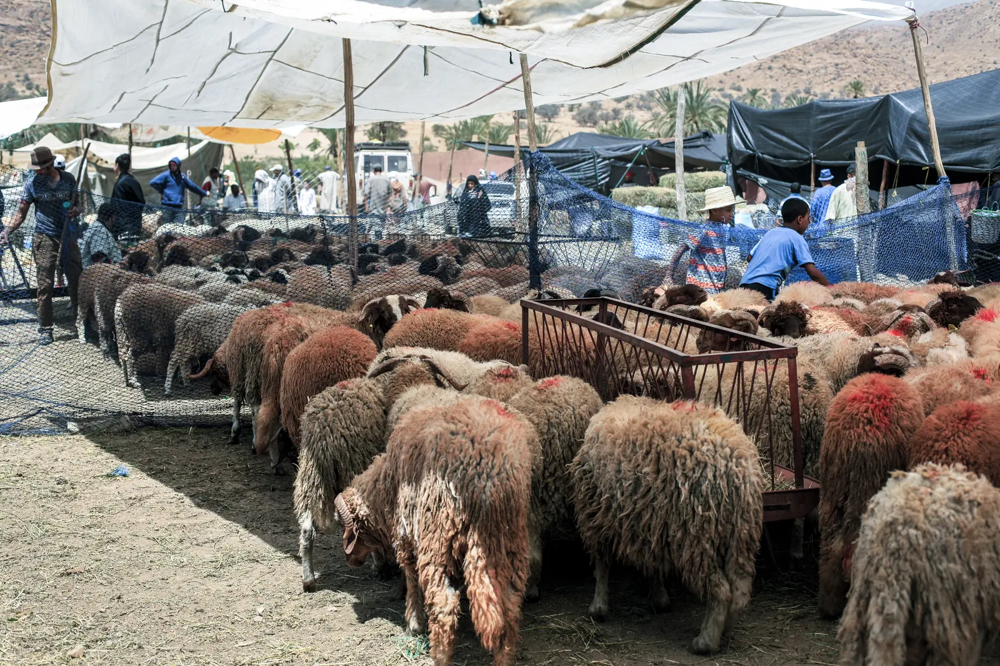

المطاحن الصناعية
تحليل استراتيجي للفرع: التقرير النهائي تدار مع الفيدرالية الوطنية للمطاحن.
PDF, 256 صفحة
حمّل PDFالدراسات الاستراتيجية القطاعية اللي موّلات الجمعية، باش تقراوها وتحملوها.



تحليل استراتيجي للفرع: التقرير النهائي تدار مع الفيدرالية الوطنية للمطاحن.
PDF, 256 صفحة
حمّل PDF